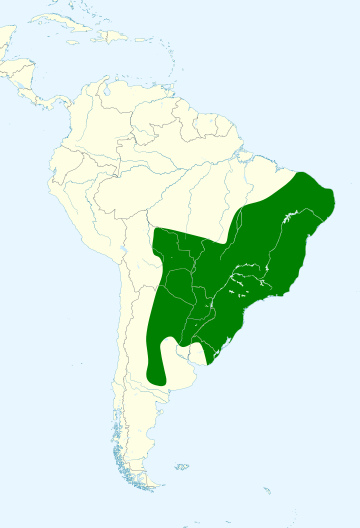

Nomes Populares: Conhecida também como sariema (Ceará) e seriema-de-pé-vermelho.
Atualmente a espécie não está em perigo de extinção.
Classificação Biológica
Dominio: Eukaryota
Reino: Animalia
Filo: Chordata
Classe Aves
Ordem: Cariaformes
Família: Cariamidae
Espécie: C. cristata
Nutrição Geral
Tipo de Nutrição: Heterotrófico.
Alimenta-se de gafanhotos e artrópodes, além de pequenos animais como cobras.
Morfologia
A espécie pode atingir até 90 cm de comprimento na fase adulta e o seu peso pode chegar até 1,4 quilos. Possui uma plumagem cinza-amarelada, as patas e o bico vermelhos e o abdômen um pouco mais claro que o dorso.
Comportamento
Ave diurna que vive de forma solitária, aos pares ou em pequenos bandos.
Ocorrência
Habitam cerrados, campos sujos e pastagens e há pouca ocorrência em áreas amplamente florestadas da Amazônia, por terem o hábito de caminhar no chão.
Distribuição: ocorre na Argentina, Paraguai, Uruguai e Bolívia – estando presente em todo o Brasil, exceto nas regiões amplamente florestadas da Amazônia.
Mapa de Ocorrência

Reprodução
A seriema pode ter postura de dois a quatro ovos. O ninho é construído em árvores de pequeno porte (entre um e 5 metros), feito com gravetos e revestido de barro, folhas e estrume de gado, a fim de garantir a temperatura adequada para incubação – revezada pelo macho e pela fêmea – e dura em média duas semanas.